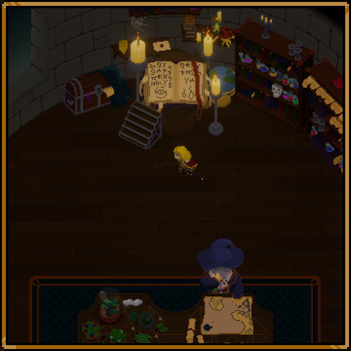
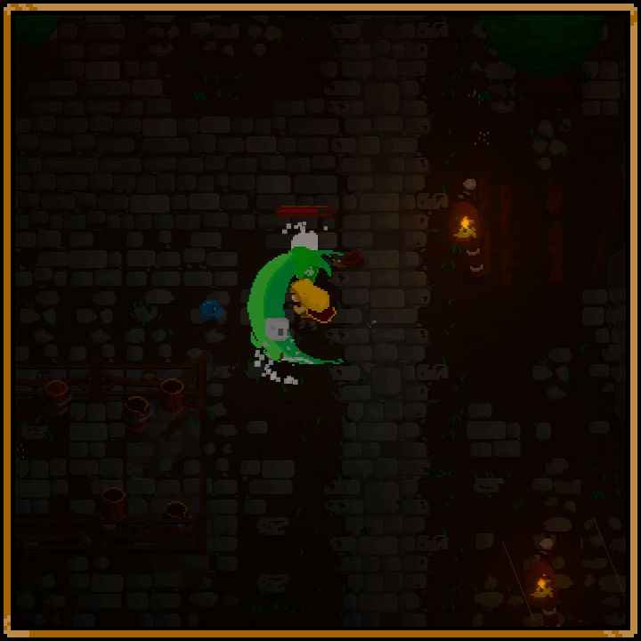
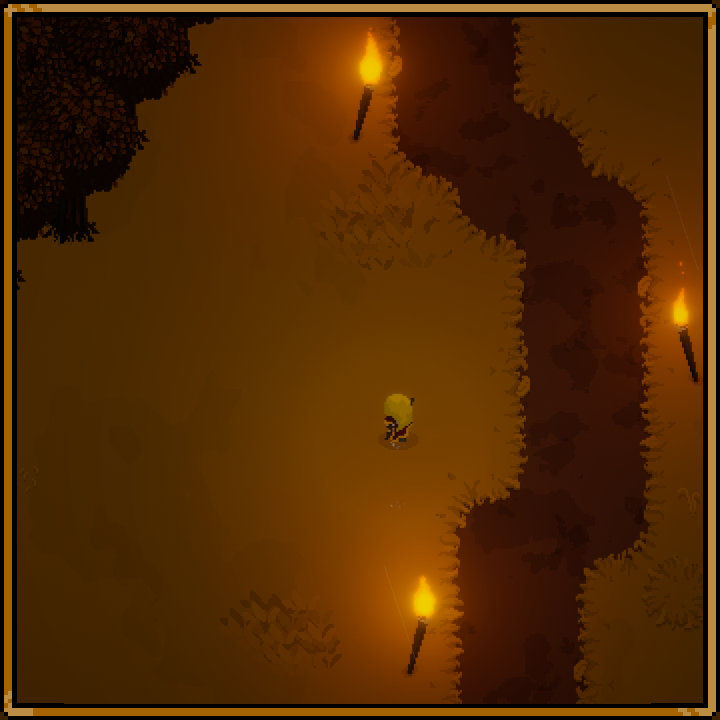
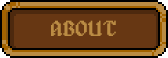

A kingdom soon to be in ruins unless you stop it!
Kingdom Fall is a dark and difficult, open world, rogue-lite, pixel art game with just enough RPG elements to make every playthrough your own.
Kingdom Falls action/adventure gameplay puts the fate of a young girl by the name of Fiara in your hands as she tries her utmost to help out the kingdom's wizard in their combined efforts to stop the evil which has invaded their home.
Throughout her adventures, Fiara will face tough enemies and even tougher bosses in order to capture their corrupted life essence and imbue herself with stat upgrades and a wide variety of abilities through the help of the wizard. With the newly gained power Fiara will once again venture out to progress even further into the falling kingdom and closer to the ultimate evil.
With a wizard and the power of life essence, not even death is a big enough challenge.
-

-

-

Kingdom Fall is a dark-fantasy game reminiscent of roguelike games, but with some great tweaks on an old formula.
The world of Kingdom Fall is made with the express intent on letting you, the player, decide their own way through it. Early on, Kingdom Fall opens up and allows you to explore each of the primary areas in the game in any order you so choose, allowing for a special experience for all players.
Every level is handcrafted and will persist throughout the game, making sure you won’t be completely lost every time you make a run. Enemy locations and groupings as well as location of loot and other pickups will however be procedural, making sure that even though you know where to go, it will never be the same challenge twice.
No matter where you go, the difficulty will always give you a bigger challenge in the areas you haven’t visited yet. New areas give new challenges and old areas stay the same, allowing you to go wherever you want, whenever you want and still find new challenges.
Don’t worry, we won’t bombard you with emails. Only important events and big news are sent out to you.

Skeleton Game Studios is a small and new indie game studio located in Denmark. We are two guys who have always loved playing video games and since childhood talked a lot about making and designing our own game. Fortunately for us, the time has finally come where our abilities and passion can meet to make something that not only we can be proud to present, but also something others will enjoy.
If you think you would enjoy following us we hope to see you on one of Kingdom Falls social media channels, as Kingdom Fall is our first commercial project.